Teknik Penggunaan Insulin (Novopen 4)
Cara Penggunaan Novopen 4 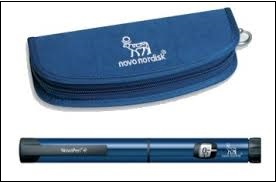
A. Pemasangan kartrij insulin
1. Buka penutup pen. 2. Tanggalkan pemegang kartrij. 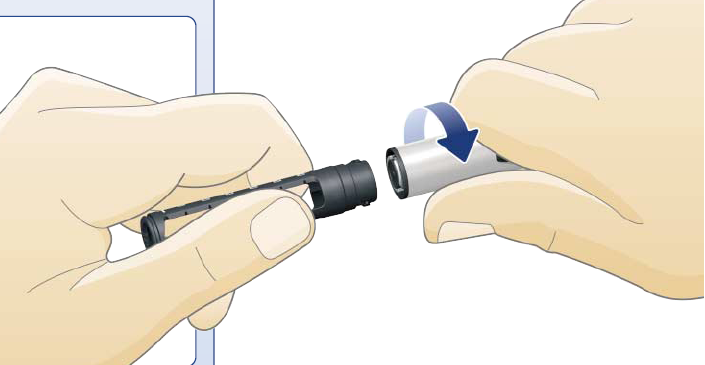 3. Tekan skru ke dalam pen. 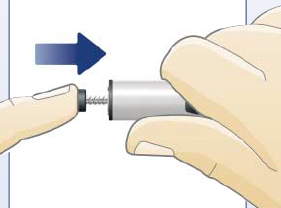 4. Masukkan kartrij insulin ke dalam pemegang kartrij. 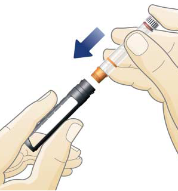 5. Pasangkan semula pemegang kartrij pada pen. 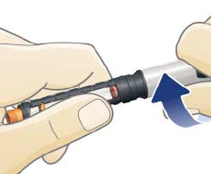
B. Sebelum setiap suntikan
6. Golek pen secara perlahan sebanyak 10 kali dan goncang pen ke atas dan ke bawah sebanyak 10 kali supaya insulin dicampur dengan rata. 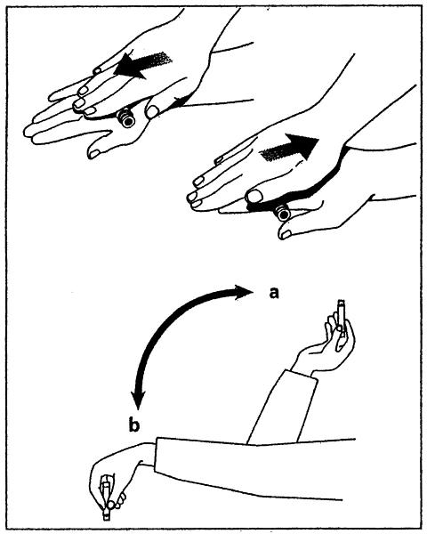 7. Pasangkan jarum pada pemegang kartrij. 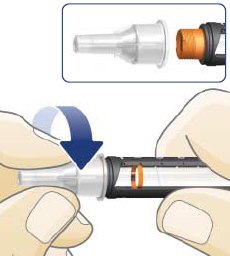 8. Tanggalkan penutup luar dan penutup dalam jarum. Simpan penutup luar untuk menanggalkan jarum selepas suntikan. 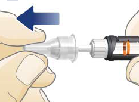 9. Tarik keluar butang suntikan dan pilih 2 unit dengan memutarkan butang suntikan. 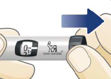
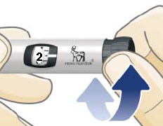10. Pegang pen secara tegak. Jentik kartrij supaya gelembung udara naik ke atas hujung kartrij. Tekan butang suntikan dan perhatikan sama ada terdapat aliran insulin keluar dari jarum. 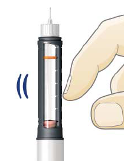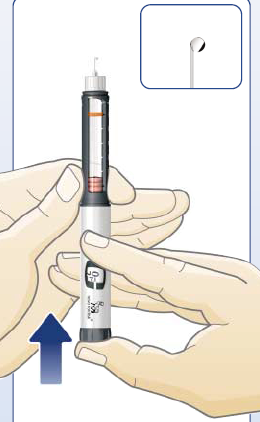
C. Suntikan dos insulin
11. Tarik keluar butang suntikan dan pilih dos anda dengan memutarkan butang suntikan. Jika putar lebih daripada dos yang diperlukan, anda boleh betulkan dengan memutar balik. 12. Bersihkan tempat suntikan. 13. Suntikkan dos anda dengan menekan butang suntikan sepenuhnya dengan perlahan. Tahan butang suntikan selama 5-10 saat. Pastikan tetingkap dos menunjukkan 0. 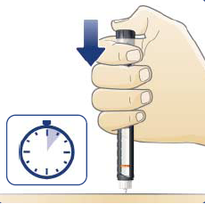 14. Keluarkan jarum daripada kulit. 15. Tutupkan jarum dengan penutup luar dan tanggalkan jarum. 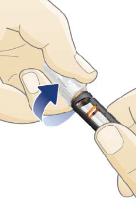 16. Sarungkan pemegang kartrij dengan penutup pen dan simpan di tempat suhu bilik untuk suntikan seterusnya.
Anda perlu tahu ......
Jika angka pada tetingkap dos tidak menunjukkan 0, angka tersebut adalah dos insulin yang belum disuntik. Sila ingati angka tersebut dan suntik selepas tukar kartrij baru.
Sila tanggalkan jarum selepas setiap suntikan.
Satu jarum boleh digunakan untuk 3-4 kali suntikan.
Jangan simpan pen di dalam peti sejuk.
Tempat Suntikan Insulin
- Bahagian yang boleh disuntik adalah perut (jarak 2 jari dari pusat), peha, lengan dan punggung.
- Tempat suntikan perlu dijarakkan 2 jari dari tempat suntikan sebelumnya.
- Tempat suntikan haruslah diubah setiap kali suntikan untuk mengelakkan pembentukan ketulan lemak keras di bawah lapisan kulit.
Penyimpanan Insulin Baru
- Insulin baru haruslah disimpan di dalam peti sejuk. Jangan bekukan insulin.
- Insulin baru haruslah diletak secara melintang.
- Jangan simpan di tempat yang panas atau terdedah kepada cahaya matahari.
- Insulin yang sedang digunakan tidak perlu disimpan di dalam peti sejuk.
- Insulin yang disimpan di suhu bilik haruslah dibuang selepas 1 bulan penggunaan.